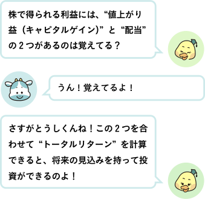
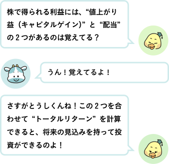

● 株の利益は2種類！
株の利益には、主に2つの種類があります。
株の利益には、主に2つの種類があります。

・キャピタルゲイン（値上がり益）
株を買った値段より高く売ったときに得られる利益です。
例：1,000円で買った株が1,500円に上がる → 500円のもうけ
・インカムゲイン（配当や利息収入）
会社が利益を出したとき、株主にお金を分配することがあります。
これが「配当金」で、株を持っているだけで定期的に受け取れる収入です。
● 配当利回りってなに？
株を買った値段より高く売ったときに得られる利益です。
例：1,000円で買った株が1,500円に上がる → 500円のもうけ
・インカムゲイン（配当や利息収入）
会社が利益を出したとき、株主にお金を分配することがあります。
これが「配当金」で、株を持っているだけで定期的に受け取れる収入です。
● 配当利回りってなに？

株を持っていると、どのくらいの割合で配当がもらえるかを数字で確認できます。これを配当利回りといいます。
例：株価 1,000円で、1年に 50円の配当を受け取れる場合
配当利回り = 50 ÷ 1,000 × 100 = 5％
例：株価 1,000円で、1年に 50円の配当を受け取れる場合
配当利回り = 50 ÷ 1,000 × 100 = 5％
● 利回りが高い株っていいの？
・株価が下がると、利回りは計算上高く見える
・無理に高い配当を続けて、会社が苦しくなることもある
例：
・株価 1,000円、配当 50円 → 配当利回り 5％
・株価が業績悪化で 500円に下がっても配当が同じ 50円なら…
配当利回り = 50 ÷ 500 × 100 = 10％
・株価が下がると、利回りは計算上高く見える
・無理に高い配当を続けて、会社が苦しくなることもある
例：
・株価 1,000円、配当 50円 → 配当利回り 5％
・株価が業績悪化で 500円に下がっても配当が同じ 50円なら…
配当利回り = 50 ÷ 500 × 100 = 10％
● まとめ
・株の利益は「キャピタルゲイン」と「インカムゲイン（配当）」の2つ
・配当利回りは株価に対してどれくらい配当がもらえるかを示す
・成果はトータルリターンで判断するのが重要
・高い利回りだけに飛びつかず、会社の安定性も必ずチェック！
・株の利益は「キャピタルゲイン」と「インカムゲイン（配当）」の2つ
・配当利回りは株価に対してどれくらい配当がもらえるかを示す
・成果はトータルリターンで判断するのが重要
・高い利回りだけに飛びつかず、会社の安定性も必ずチェック！
次回は、「M＆Aや企業買収ってどういうこと？」というお話。会社が合併や買収でどう変わるのか、株主の株がどう扱われるのかをわかりやすく学びます！